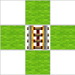
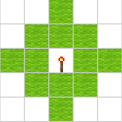
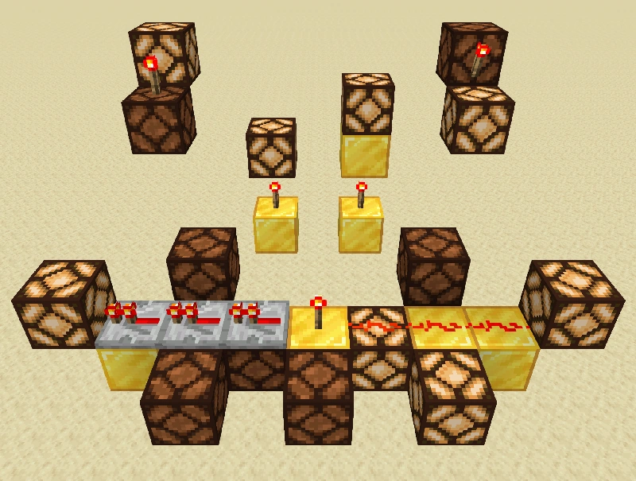
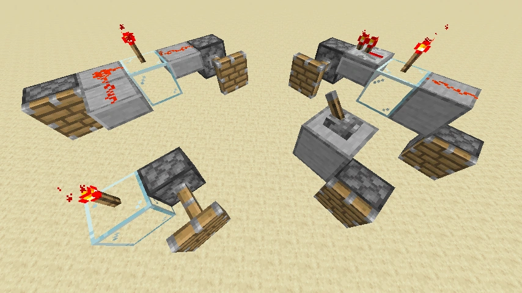
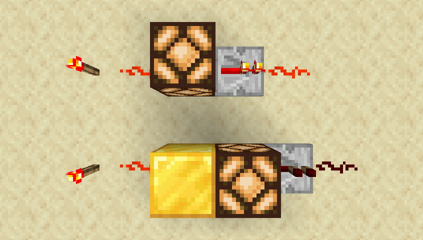
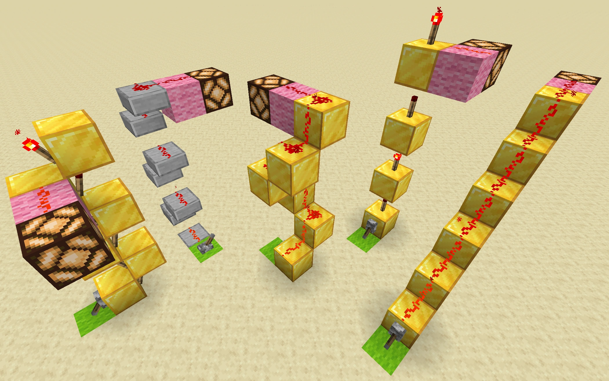
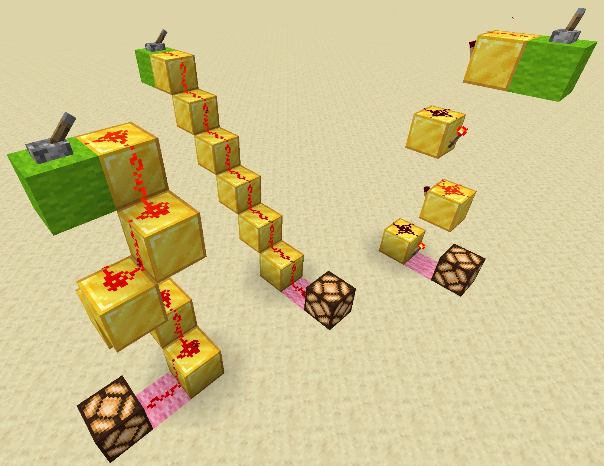
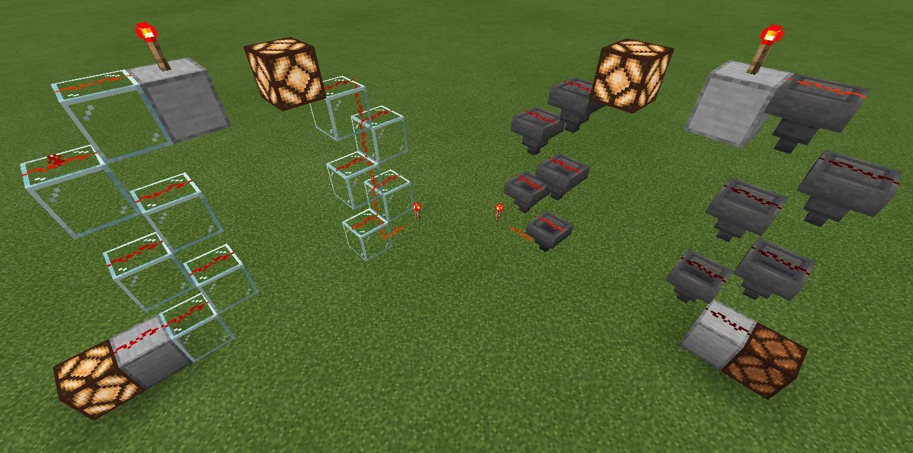

教程/红石电路
本文章介绍的是红石电路。关于其他红石相关条目，请见“红石”。红石电路（Redstone circuits）为玩家建造的，可以用于控制或激活其他机械的结构。
电路本身既可以被设计为用于响应玩家的手动激活，也可以让其自动工作——或是反复输出信号，或是响应非玩家引发的变化，例如生物移动、物品掉落、植物生长、日夜更替等等。Minecraft中能够被红石控制的机械类别几乎覆盖了你能够想象到的极限，小到最简单的机械（如自动门与光开关），大到占地巨大的电梯、自动农场、小游戏平台，甚至游戏内建造的计算机。了解如何构建和使用红石电路及其可控制的机制能极大地增加Minecraft中可游玩的深度。
红石电路的主题非常广泛，本条目只是红石电路的一个概述。点击各章节的主条目可以查看详细信息。
基本概念在描述基本的红石电路之前，需要先了解一些基本概念。
位置
一个方块占据一个正方体的空间，正方体有6个面。也就是说与一个方块的六个面直接接触的方块有6个，称之为“与该方块毗邻的方块”，简称毗邻。
一个方块的毗邻和毗邻的毗邻（即与这个方块的 曼哈顿距离为两格以内的方块），通称为这个方块的二阶毗邻。一个方块的毗邻的毗邻共有19个方块（包括它本身），二阶毗邻共有25个方块（包括它本身）。
四周一般指的是与该方块东西南北四个面相接触的4个方块。
红石线、红石火把等方块需要附着在其他方块上，一旦所附着的方块被破坏，它本身也会掉落。它们所附着的方块简称为它们的附着。
一些电源和传输元件有它的指向。 中继器、 比较器的指向就是输出端所朝向的方块， 红石火把的指向是正上方的那一个方块， 红石粉的指向通常与它的纹理的朝向相同，但也有特殊情况。
|  |
| 毗邻方块 |
|  |
| 以曼哈顿距离度量的“两格以内”范围 |
电路与机械
两个术语通常都用于指包含红石元件的结构，但两者一般还是有一定区别的：
- 电路（circuit）为处理信号的结构（产生，传输，修改，组合等）。
- 机械（mechanism）会对环境产生影响（移动方块，开门，改变光照强度，播放声音等）。
所有机械一定包含电路，因此也可称为机械电路。但电路本身是不会对环境产生影响的（除了红石火把等产生的光，或活塞作为电路组成成分之一时造成的推拉方块的副效果）。复杂的电路还可以细分为数字电路和模拟电路。参见下文基本种类章节。
信号与脉冲
红石电路能够产生信号——“有/无信号”时称为“1/0”、“真/假”或“高电平/低电平”。
上边沿/上升沿指红石信号由无到有的变化瞬间；下边沿/下降沿指红石信号由有到无的变化瞬间。
相（Phase）代表相位，指逻辑代数中的“相同”与“相反”（例如“1”与“0”互为反相）。
当信号出现一个较为短暂的“0-1-0”过程，该过程通常被称为脉冲（或正脉冲。“1-0-1”的过程被称为负脉冲）。脉冲持续的时间长度被称为脉冲的长度。另见下文 脉冲电路。
充能等级
使用多少信号强度的信号去充能一个方块，我们就说这个方块有多少充能等级。被强充能的方块有多少充能等级，就可以激活毗邻的红石粉至多少信号强度。充能等级的大小与充能的强与弱完全无关。
激活
机械元件和红石元器件可被电源、充能方块和传输元件以特定的方式激活，引发机械元件和红石元器件的反应（如活塞推动方块，开门，红石火把熄灭等）。
有些机械元件只会在刚被激活的瞬间有所反应，直到取消激活并再激活之前都不会再有所反应（如命令方块执行命令，投掷器与发射器发射物品，音符盒播放一个音符）。其他机械元件会在激活时始终保持状态，直到取消激活（红石灯保持点亮，门保持开启，漏斗保持锁定状态，活塞保持伸出等）。
所有机械元件都可以被下列方块激活（例外： 活塞不会被其活塞头朝向的方块常规激活）：
- 毗邻的，处于开启状态的电源
- 毗邻的充能方块（强充能与弱充能均可）
- 指向该机械元件的、输出信号的红石比较器或红石中继器
- 指向该机械元件的、激活的红石粉，包括附着其上的红石粉。（毗邻的、但未指向机械元件的红石粉不会激活机械元件）
部分机械元件可以用其他方式激活：
|  |
| 红石灯的激活 |
|  |
| 半连接方式激活——活塞也可以被能够激活活塞之上空间的东西激活。请注意，最左侧的活塞并未被半连接激活，因为红石粉没有直接指向活塞上方的方块，因此无法激活该活塞 |
充能与激活
|  |
| 充能与激活 — 上方的红石灯既被“激活”（因此红石灯点亮），也被“充能”（因此毗邻中继器被激活），但下方红石灯只是被“激活”，并未被“充能” |
基本种类
根据电路的原理及功能，中文区玩家将其分为三大模块和其他种类。
数字电路
数字电路，简称数电，即通过游戏所给的逻辑机制（或、非）来实现逻辑运算。
数字电路一般是基于二进制运算法则和逻辑运算来实现各种运算，从而实现各种复杂的计算机和计算器。
数字电路在现实中是一门学科，所以如果没有知识基础，数字电路这个领域对普通玩家来说是十分复杂而高深的。
由于数字电路里实现各种复杂的数学运算多使用到加法器，所以数电圈里有一句话：数电万物皆可加。
数电相较于模电，速度较快，体积较大。
红石模拟电路
“模拟”意为“连续变化”。这并不符合Minecraft中的只有16格离散值的模拟线路（例如，13.43强度的信号并不存在）。但这里使用“模拟”一词是为了区分信号强度传输与0/1传输，现实生活中也只有数字电子技术（仅传输高电压或低电压）与模拟电子技术（重在连续变化的电势）之间的区别与其最为相似了。因此“模拟”与“数字”的叫法被各大Minecraft社区所采用。
红石模拟电路，简称模电，即利用比较器的比较、减法模式来对模拟信号的处理与运算。现实中的模拟电路是连续的信号强度，而红石模拟电路是离散的信号强度，所以和现实模拟电路还是有区别的，不能混为一谈。
由于红石模拟电路里实现各种复杂的数学运算多使用到比较器，所以模电圈里有一句话：红模万物皆可减。
模电相较于数电，速度较慢，体积较小。
红石模拟电路主要分为弱信号模拟电路和强信号模拟电路。有的模拟电路也会使用小于0的红石信号进行计算。
红石弱信号模拟电路
红石弱信号模拟电路，简称弱模。
弱模是基于0~15的红石模拟信号的处理与运算，运算规则一般基于16进制或10进制。
红石强信号模拟电路
红石强信号模拟电路，简称强模。
比较器可以最大可以寄存2,147,483,647信号强度，而红石线最大只能寄存0~15红石强度。强模是对比较器中的15~2,147,483,647信号强度的模拟信号进行的运算与处理。
基本电路
虽然建造电路的方法无穷无尽，但特定功能的电路建造样式是比较固定的。下面的章节对一些电路进行了分类，每个章节有独立的主条目用于描述具体的电路设计方案。
某些电路可能只能完成最简单的控制功能，但可以将此类简单电路组成复杂的、能够满足机械需要的大型电路。
脉冲电路
一些电路需要特定长度的脉冲，也有一些电路用脉冲长度传达特定信息。脉冲电路派上了用场。
在一个状态稳定，另一个状态不稳定的电路通常称为单稳态电路（monostable circuit）。大多数脉冲电路属于单稳态电路，因为它们的激活态（非稳态）只能持续较短时间就回到稳定态。
- 脉冲发生器
-
- 脉冲发生器产生特定长度的脉冲。
- 脉冲限制器
-
- 脉冲限制器（又称脉冲缩短器）可以缩短过长的脉冲。
- 脉冲稳定器
-
- 脉冲稳定器（又称脉冲延长器）可以延长过短的脉冲。
- 脉冲延迟
-
- 脉冲延迟电路能够为脉冲提供延迟。
- 边沿感应器
-
- 边沿感应器在信号变化时输出脉冲：从0到1（“上升沿”感应器）或从1到0（“下降沿”感应器），或两者均感应（“双边沿”感应器）。
- 脉冲长度识别器
-
- 脉冲长度识别器能够在输入脉冲长度在某个范围内时输出信号。
纵向传输电路
虽然横向传输较为直接，但纵向传输有时具有更好的适应性与集成性。下面列举了一些简易的纵向传输电路：
红石楼梯
最简单的纵向传输就是在斜向上的方块上铺设红石线，或是使用2×2的螺旋结构等等。红石楼梯既能够向上也能向下传输信号，无延迟，但占地庞大，每15个就需要中继。
红石梯子
因为荧石块、倒置楼梯与台阶上方能够放置红石线的同时不会隔断红石线，信号就能够在2×1的“梯子”上纵向传输，但仅能向上传输，这也相当于一个纵向的二极管。红石梯子占地小，无延迟，但每15个就需要中继。在基岩版中，可以通过漏斗或玻璃形成1×2的梯式纵向双向传输。
火把高塔
红石火把能够充能其上方的方块并激活毗邻的红石线，这样，纵向传输便成为可能（向上与向下的设计不同）。无需中继，占地小，但会引入不小的延迟。
侦测器和红石粉（或激活铁轨、钟、发射器、门、投掷器、栅栏门、漏斗、音符盒、活塞、动力铁轨、铁轨、红石灯、活板门、仅用侦测器）
一个侦测器可以激活上方或下方的红石粉，因此可以实现纵向双向传输。当侦测器面朝上或朝下的时候，在它的上面和下面放置红石粉，就会产生一个脉冲，再在它的上面或下面再使用一个侦测器检测这个脉冲并产生新的脉冲，重复这个模式意味着脉冲将被持续传输。
|  |
| 向上纵向传输 |
|  |
| 向下纵向传输 |
|  |
| 基岩版中的双向垂直梯子 |
记忆电路
与逻辑电路永远反映输入信号不同，记忆电路的输出不单与输入相关，还与“过去的输入”相关。这样能够完成对电路过去状态的“记忆”。在现实生活中的电子学中，锁存器（Latch）指对输入信号的某个状态产生反应的电路；触发器（Flip-flop）指对输入信号的变化产生反应的电路。
- RS锁存器
-
- RS锁存器有2个输入。输入端为S（Set改变状态）端与R（Reset重置状态）端：S端输入一旦变成1，输出就为1并保持；R端输入一旦变成1，输出就为0并保持。最简单的RS锁存器为知名的“RS或非锁存器”，其为Minecraft最古老也是最常见的记忆电路。
- T触发器
-
- T触发器用于信号切换（类似拉杆）。T触发器具有“clock（时钟）”输入端。输入端满足特定条件时，则翻转输出信号（1变为0，0变为1）。
- D触发器
-
- 具有“data（数据）”输入端与“clock（时钟）”输入端。输入端满足激活条件时，输出端会变成此刻数据输入端相同的状态。
- JK触发器
-
- 和RS锁存器相似，但RS锁存器不支持R端和S端同时为1，而JK触发器在J端和K端同时为1时则翻转输出信号（1变为0，0变为1）。现实中用它来实现t触发器和d触发器，但在游戏中用处不大。
还有很多记忆电路可供选择。
杂项电路
- 示波器
- 示波器为依次连接的中继器链，据此能够通过点亮的中继器数量直观地测量脉冲长度。
- 计数器
- 计数器（Counter）是用于记录输入脉冲数量的装置，基本结构为级联的边沿触发型触发器。
- 方块更新感应器
-
参见：教程/方块更新感应器
- 方块更新感应器（Block Uupdate Ddetector，缩写为BUD）为能够对方块的变化产生反应的电路（例如石头被挖掘，水变成冰，南瓜长出等等）。单稳态BUD通过产生脉冲作出反应，而T-BUD（双稳态BUD）通过切换其输出状态作出反应。BUD的自复位通常依赖于活塞。侦测器也被认为是BUD的一种。
- 多输入电路
- 多输入电路能够同时处理多个输入并得出综合输出。此类电路是建造计算器、数字钟与基本计算机的基石。
- 数据分配器与继电器
- 数据分配器为逻辑门的高级形式之一，选择端的输入信号决定输出端输出与哪个输入端的数据。
爱好者们还有很多更复杂的电路方案。